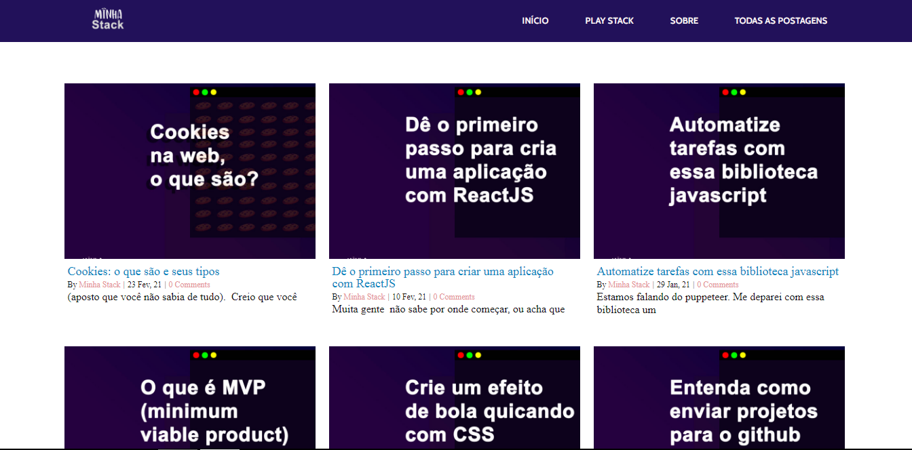
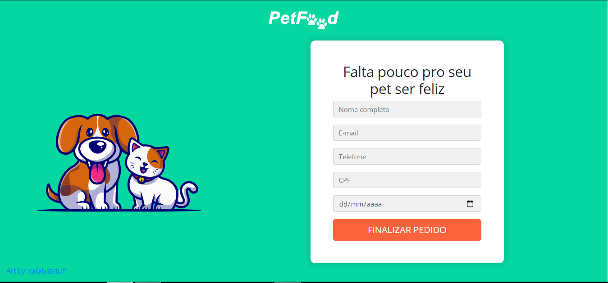
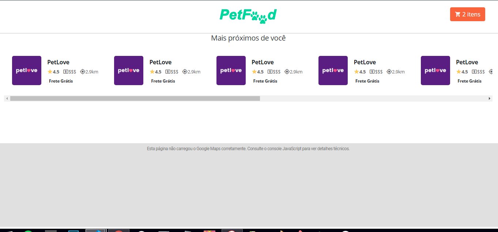
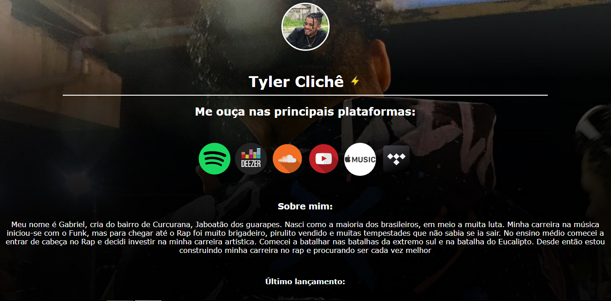

About
Gosto da ideia de estar em constante aprendizado, sempre mantendo o foco no objetivo de ser cada vez melhor no que faço. Comecei no desenvolvimento web em 2019 com a intenção de criar um site para minha loja de camisetas, me apaixonei pela área estou aqui desde então.
Projetos ativos:
MinhaStack
Este é o projeto mais ativo que tenho atualmente. É voltado para educação e desenvolvimento pessoal de devs de qualquer stack. Veja clicando aqui
Petfood
Petfood é um projeto fictício que estou usando para estudar react e nodejs. Se trata de um marketplace para logistas anunciar seus produtos de seus petshops. Veja clicando aqui
 tyler.com
Site criado para um MC local, com o intuito de apresentar lançamentos de suas músicas no YouTube.Veja clicando aqui.
igBot
É um robô que está em desenvolvimento. O intuito dele é aumentar o engajamento do istagram sem que o usuário precise usar manualmente sua conta. Veja clicando aqui (Apenas para desenvolvedores)
Portfolio-generate
É um projeto que cria portfólios automaticamente usando python. São gerados dois arquivos: Um de html e o outro de css que contém dados passados pelo usuário para serem mostrados na tela. Veja clicando aqui
User-report
É um projeto que gera PDF's com a foto de perfil, nome e repositórios disponíveis de um usuário do github (ainda em desenvolvimento). Veja clicando aqui